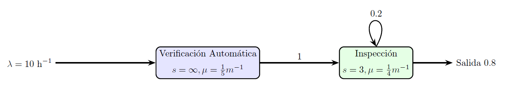

Complementaria 7: Cadenas de Markov en Python I#
Una cadena de Márkov es un proceso estocástico que describe el estado de un sistema a través de una variable de estado que, a partir de un estado inicial, realiza transiciones entre distintos estados, siempre dentro de un espacio de estados definido. Su característica fundamental es la propiedad de no memoria, según la cual la probabilidad con la cual se visita el siguiente estado depende únicamente del estado actual, y no de la secuencia de eventos o estados anteriores.
Este tipo de modelos permite representar y analizar sistemas complejos bajo dichos supuestos, facilitando la comprensión de su comportamiento tanto a corto como a largo plazo. Gracias a ello, es posible anticipar escenarios futuros, optimizar decisiones y prevenir situaciones indeseadas.
Parte 1: Ejercicio Guiado#
RentBike es un servicio de alquiler de bicicletas el cual funciona en el área cercana a la zona universitaria del centro de la ciudad, con \(30\) bicicletas disponibles para alquiler. Las personas se acercan a este lugar y rentan bicicletas para su uso en lugares cercanos. Después de esto, los clientes las devuelven en el mismo lugar. La llegada de clientes al local de RentBike sigue un Proceso de Poisson con media de \(5\) personas por hora. Por otro lado, los clientes hacen uso de las bicicletas durante un tiempo que se distribuye exponencial con tasa de \(9\) personas por hora.
Para modelar cadenas de Markov en Python utilizaremos la librería jmarkov. Especificamente, ya que queremos modelar una cadena en tiempo continuo, usaremos el módulo ctmc. También usaremos numpy para el manejo general de matrices y vectores. Accedemos a ellas a continuación.
from jmarkov.ctmc import ctmc
import numpy as np
Lo que caracteriza a una cadena de Markov son sus estados y su matriz de transición. Creemos estos elementos.
Nuestra variable de estado será $\(X_t = \text{Número de bicicletas \textbf{alquiladas} en el instante } t.\)$
Notemos que podríamos utilizar la variable complemento, donde se guarde el número de bicicletas disponibles a alquilar.
¡Anímate a intentarlo! ¿Cómo cambia la formulación?
# Definamos la capacidad máxima del sistema
num_bicis = 30
# Creemos el vector de estados
estadosBicis = np.array([i for i in range(0,num_bicis+1)]) # range(i,j) itera hasta j-1, así que para asegurarnos tener
# la capacidad máxima, sumamos 1
Ahora, crearemos la matriz de transiciones. Primero, crearemos una matriz llena de ceros y, a partir de la formulación general, la llenaremos por medio de ciclos y condicionales.
# Creamos una matriz llena de ceros
matrizBicis = np.zeros((len(estadosBicis),
len(estadosBicis)))
# Recorremos sobre las filas (estado inicial)
for i in estadosBicis:
# Recorremos sobre las columnas (estado futuro)
for j in estadosBicis:
# Que alquilen una bici
if j==i+1 and i<30:
matrizBicis[i,j] = 5
# Que devuelvan una bici
elif j==i-1 and i>0:
matrizBicis[i,j] = 9*i
Para representar la tasa de permanencia en un estado, utilizamos la suma negativa de los otros posibles eventos iniciando en cierto estado. Así, llenemos la diagonal de la matriz.
# Llenamos la diagonal
# Recorremos los estados
for i in estadosBicis:
# Donde la fila y la columna sean iguales (diagonal)
matrizBicis[i,i] = - sum(matrizBicis[i,])
Ahora, verifiquemos que la suma de las filas sea igual a 0. Esto es un paso importante para debugging, permite entender qué filas no están cumpliendo con las condiciones establecidas anteriormente.
# Verificación de la suma de las filas
np.sum(matrizBicis, axis=1)
array([0., 0., 0., 0., 0., 0., 0., 0., 0., 0., 0., 0., 0., 0., 0., 0., 0.,
0., 0., 0., 0., 0., 0., 0., 0., 0., 0., 0., 0., 0., 0.])
Finalmente, estamos listos para crear el objeto cadena de Markov.
cadenaBicis = ctmc(matrizBicis, estadosBicis)
sum(cadenaBicis.steady_state()[0:11])
np.float64(0.9999999999765533)
Con el objeto creado, podemos utilizar todos los métodos de jmarkov. ¡Explóralos!
# Para revisar que una cadena sea irreducible, devuelve True si es irreducible y False de lo contrario
print(f'¿La cadena es irreducible? {cadenaBicis.is_irreducible()}')
# Para revisar que una cadena sea ergódica, devuelve True si es ergódica y False de lo contrario
print(f'¿La cadena es ergódica? {cadenaBicis.is_ergodic()}')
# Devuelve las probabilidades de estar en cada uno de los estados, en el largo plazo
print(f'¿Cuál es la probabilidad de estar en cada uno de los estados en el largo plazo? \n{cadenaBicis.steady_state()}')
print(f'¿Cuál es la probabilidad de tener 10 bicis alquiladas o menos, en el largo plazo? \n{sum(cadenaBicis.steady_state()[0:11]):.9%}')
# Devuelve las probabilidades de estar en cada uno de los estados, en t pasos y dado un vector de probabilidades iniciales
probs_iniciales = np.repeat(1/len(estadosBicis), len(estadosBicis)) # Creamos un vector de probabilidades iniciales donde se está
# en todos los estados equiprobablemente
t = 12 # Queremos revisar cómo se comportará el número de bicis alquiladas en 12 horas
probs_transitorio = cadenaBicis.transient_probabilities(t=t,
alpha=probs_iniciales)
print(f'¿Cuál es la probabilidad de que en {t} horas, estén todas las bicicletas alquiladas? \n{probs_transitorio[30]:%}')
¿La cadena es irreducible? True
¿La cadena es ergódica? True
¿Cuál es la probabilidad de estar en cada uno de los estados en el largo plazo?
[5.73753421e-01 3.18751900e-01 8.85421946e-02 1.63967027e-02
2.27731982e-03 2.53035535e-04 2.34292162e-05 1.85946161e-06
1.29129278e-07 7.97094313e-09 4.42830196e-10 2.23651757e-11
1.03543910e-12 4.42597348e-14 1.76421378e-15 6.93889390e-17
6.93889390e-18 6.93889390e-18 5.20417043e-18 3.46944695e-18
1.73472348e-18 1.73472348e-18 0.00000000e+00 1.73472348e-18
0.00000000e+00 0.00000000e+00 0.00000000e+00 1.73472348e-18
1.73472348e-18 0.00000000e+00 1.73472348e-18]
¿Cuál es la probabilidad de tener 10 bicis alquiladas o menos, en el largo plazo?
99.999999998%
¿Cuál es la probabilidad de que en 12 horas, estén todas las bicicletas alquiladas?
0.000000%
Parte 2: Ejercicio Aplicado#
En una estación de control fronterizo se realiza la \(\textbf{inspección y registro de viajeros}\) que ingresan al país. Los viajeros llegan al punto de control, con una tasa promedio de \(\lambda = 10\) personas por hora, y deben pasar por \(\textbf{dos etapas sucesivas}\):
Todos los pasajeros que llegan pasan por una verificación automática de documentos, en la que cada viajero escanea su pasaporte y formulario digital en una máquina de autogestión o por medio de su teléfono móvil. El tiempo de servicio en esta estación tiene una media de \(5\) minutos.
Luego de la verificación de documentos, se realiza una inspección por parte de un oficial migratorio. El tiempo promedio de atención es de \(4\) minutos y hay tres oficiales disponibles. Una vez atendidos, el \(80\%\) de los viajeros sale del sistema y el \(20\%\) es enviado nuevamente a la inspección manual para revisión complementaria.
Se desea evaluar el desempeño del sistema teniendo en cuenta que la estación de control fronterizo \(\textbf{tiene una capacidad máxima de 50 personas}\).
A continuación, se encuentra una gráfica del proceso de control fronterizo.
Igual que en el ejercicio anterior, caracterizamos a la cadena por sus estados y matriz de transiciones.
# Definimos la capacidad máxima del sistema
capacidad_maxima = 50
# Definimos los posibles valores de los espacios de estados individuales
estados_VA = [i for i in range(0,capacidad_maxima+1)]
estados_I = [j for j in range(0,capacidad_maxima+1)]
# Creamos una lista para guardar el espacio de estados conjunto
estados_conjunto = []
# Recorremos todos los posibles estados de Verificación Automática (VA) e Inspección (I)
for i in estados_VA:
for j in estados_I:
# Verificamos que el estado sea factible
if i+j <= capacidad_maxima:
# Agregamos el estado a nuestra lista de estados conjunto
estados_conjunto.append(f'{i},{j}')
# Guardamos el conjunto de estados como un np.array
estados_conjunto = np.array(estados_conjunto)
estados_conjunto
array(['0,0', '0,1', '0,2', ..., '49,0', '49,1', '50,0'],
shape=(1326,), dtype='<U5')
Luego, creamos y llenamos la matriz de transiciones.
# Creamos una matriz llena de ceros con tantas filas y columnas como estados factibles
matrizQ = np.zeros((len(estados_conjunto),
len(estados_conjunto)))
# Llenamos la matriz, de acuerdo con la formulación general
# Recorremos sobre las filas
for fila, estado_inicial in enumerate(estados_conjunto):
# Recuperamos los índices
i = int(estado_inicial.split(',')[0])
j = int(estado_inicial.split(',')[1])
# Recorremos sobre las columnas
for columna, estado_futuro in enumerate(estados_conjunto):
# Recuperamos los índices
i_ = int(estado_futuro.split(',')[0])
j_ = int(estado_futuro.split(',')[1])
# Que llegue una persona a Verificación Automática, cuando hay espacio en el sistema
if i_==i+1 and j_==j and i+j<capacidad_maxima:
matrizQ[fila,columna] = 1/6
# Que salga una persona de Verificación Automática y entre a Inspección
elif i_==i-1 and j_==j+1 and i>0:
matrizQ[fila,columna] = 1/5
# Que salga una persona de Inspección, fuera del sistema
elif i_==i and j_==j-1 and j>0:
matrizQ[fila,columna] = 0.8*min(j,3)*(1/4)
# Llenamos la diagonal
# Recorremos sobre las filas
for fila, estado_inicial in enumerate(estados_conjunto):
matrizQ[fila,fila] = -sum(matrizQ[fila,:])
# Verificamos la suma de las filas
np.sum(matrizQ, axis=0)
# Creamos el objeto cadena de Markov
cadena_continua = ctmc(matrizQ,
estados_conjunto)
Ya que tenemos el objeto cadena de Markov, podemos utilizar todos sus métodos. Probemos algunos de ellos.
# Revisemos si es irreducile
cadena_continua.is_irreducible()
# Revisemos si es ergódica
cadena_continua.is_ergodic()
# Revisemos el número de estados
cadena_continua.n_states
# Veamos las probabilidades en el transitorio (cuando t=15)
alpha = np.zeros(len(estados_conjunto))
alpha[0] = 1
cadena_continua.transient_probabilities(t=15,
alpha=alpha)
# Veamos las probabilidades en estado estable
cadena_continua.steady_state()
array([7.20299989e-02, 6.00249991e-02, 2.50104163e-02, ...,
9.49800408e-06, 7.91500340e-06, 7.91500340e-06], shape=(1326,))
Preguntas de Profundización#
¿Qué tipo de sistemas se puede modelar como una cadena de Markov en tiempo continuo?
¿Por qué es útil crear cadenas como objetos cadenas de Markov? ¿Por qué no basta con solo tener la matriz de transición?
¿Cómo cambia el sistema si se cambia su capacidad?
¿Cómo cambia se se modifican sus tasas de entrada y servicio? ¿Qué tal si se cambian el número de servidores?
Universidad de los Andes | Vigilada Mineducación. Reconocimiento como Universidad: Decreto 1297 del 30 de mayo de 1964. Reconocimiento personería jurídica: Resolución 28 del 23 de febrero de 1949 Minjusticia. Departamento de Ingeniería Industrial Carrera 1 Este No. 19 A 40 Bogotá, Colombia Tel. (57.1) 3324320 | (57.1) 3394949 Ext. 2880 /2881 http://industrial.uniandes.edu.co